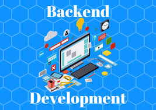

El desarrollo front-end se encarga de crear la parte visual y la interacción que el usuario observa directamente en una aplicación web. Utiliza tecnologías como HTML, CSS y JavaScript para estructurar, diseñar y dar dinamismo a las páginas. Su objetivo principal es ofrecer una experiencia de usuario clara, atractiva y fácil de usar. Los desarrolladores front-end se enfocan en la interfaz gráfica, los botones, menús, formularios y animaciones. También trabajan para que las páginas sean responsivas, es decir, que funcionen correctamente en computadoras, tablets y teléfonos móviles. Además, suelen usar frameworks o bibliotecas como React, Angular o Vue para desarrollar aplicaciones más rápidas y organizadas. Otra tarea importante es optimizar la carga de la página para mejorar el rendimiento. El front-end también debe comunicarse con el servidor mediante APIs para obtener o enviar datos. Por esta razón, requiere coordinación constante con el equipo de back-end. En resumen, el front-end es la capa que conecta visualmente al usuario con el sistema.
El front-end se enfoca en desarrollar la parte visual e interactiva de una página o aplicación web. Uno de sus principales trabajos es diseñar y construir la interfaz de usuario utilizando HTML, CSS y JavaScript. También se encarga de crear menús, botones, formularios y otros elementos con los que el usuario interactúa. Otro trabajo importante es asegurar que la página sea responsiva para que funcione correctamente en celulares, tablets y computadoras. Los desarrolladores front-end también optimizan la velocidad de carga de las páginas. Además, implementan animaciones y efectos visuales para mejorar la experiencia del usuario. Otra tarea es conectar la interfaz con los servicios del servidor mediante APIs. También prueban la interfaz para detectar errores y mejorar la usabilidad. Colaboran con diseñadores UX/UI para aplicar correctamente los diseños. En resumen, su trabajo principal es hacer que la aplicación sea atractiva, funcional y fácil de usar.
El desarrollo back-end se encarga de la parte interna de una aplicación, donde se procesa la información y se ejecuta la lógica del sistema. A diferencia del front-end, esta área no es visible para el usuario, pero es esencial para el funcionamiento de la aplicación. Los desarrolladores back-end trabajan con lenguajes como Python, Java, PHP, Node.js o Ruby. Su función principal es manejar servidores, bases de datos y la comunicación con el front-end. También se encargan de almacenar, consultar y proteger los datos de los usuarios. El back-end define cómo se procesan las solicitudes que llegan desde la interfaz del usuario. Además, implementa reglas de negocio, autenticación, seguridad y control de acceso. Otro aspecto importante es la creación de APIs que permiten que diferentes sistemas se comuniquen entre sí. El rendimiento del servidor y la eficiencia de las consultas a la base de datos también forman parte de su trabajo. En conclusión, el back-end es el motor que hace posible que toda la aplicación funcione correctamente.

El back-end se encarga de la lógica interna que permite que una aplicación funcione correctamente. Uno de sus principales trabajos es desarrollar y mantener el servidor donde se procesa la información. También gestiona las bases de datos donde se almacenan los datos de los usuarios y del sistema. Otra función es crear APIs que permiten la comunicación entre el servidor y el front-end. Los desarrolladores back-end implementan la lógica de negocio que define cómo debe comportarse la aplicación. También se encargan de la autenticación y seguridad de los usuarios. Otro trabajo importante es optimizar el rendimiento del sistema para que las respuestas sean rápidas. Además, manejan la validación y procesamiento de datos que llegan desde el cliente. También realizan pruebas para asegurar que el sistema funcione sin errores. En conclusión, el back-end es responsable de que toda la información y procesos del sistema funcionen de forma segura y eficiente.
Lenguajes de Programación:
IDEs: